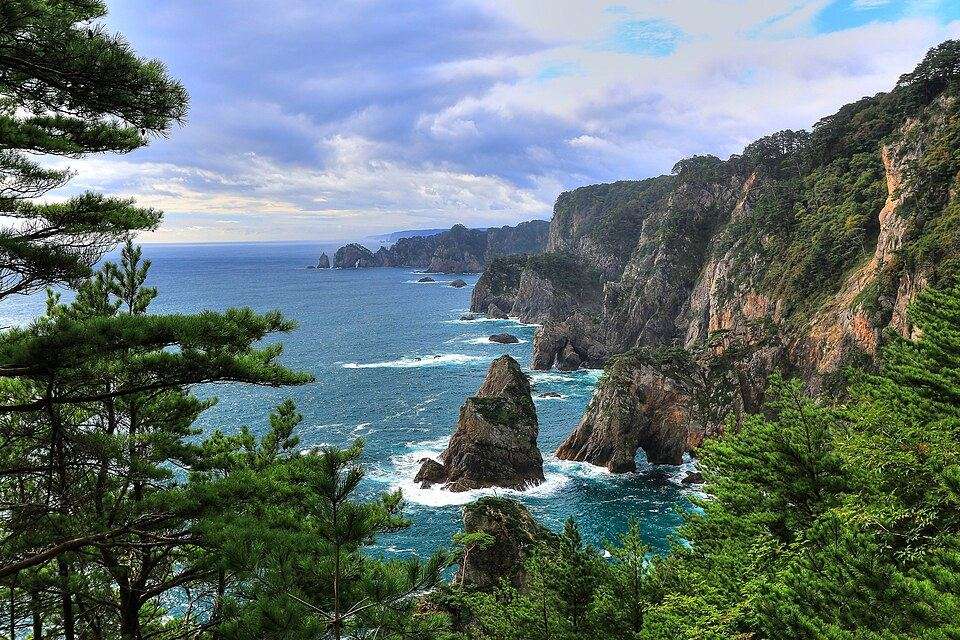
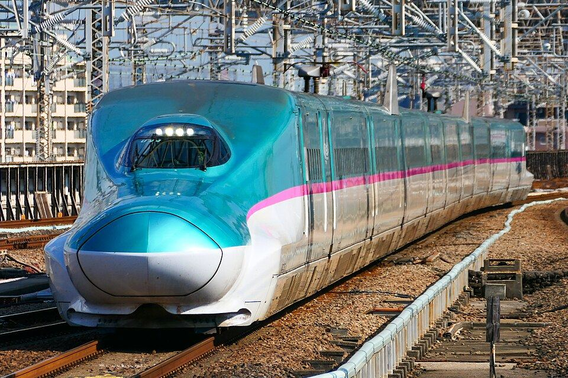
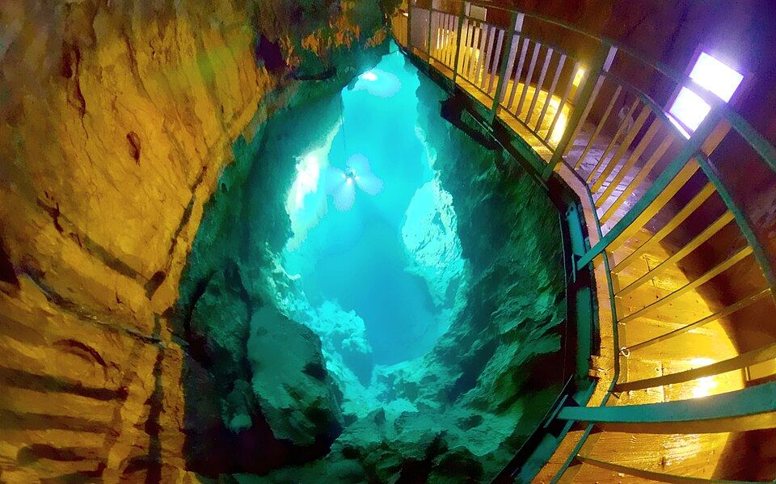
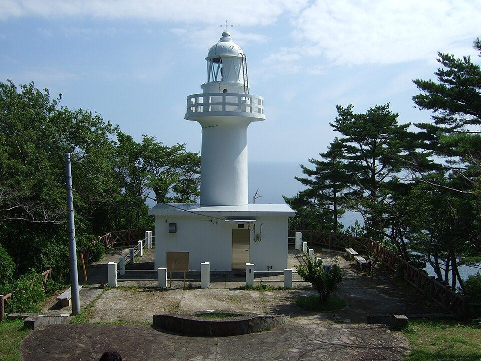
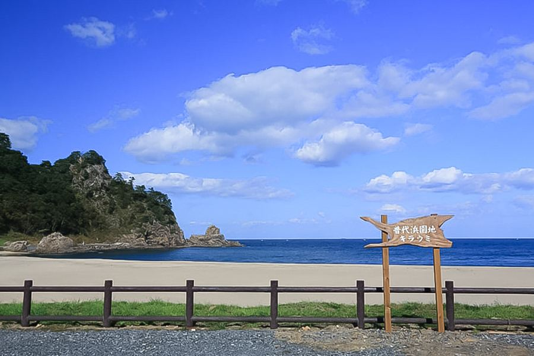
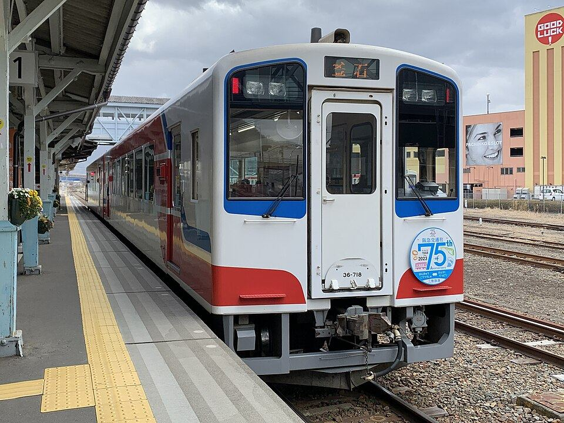
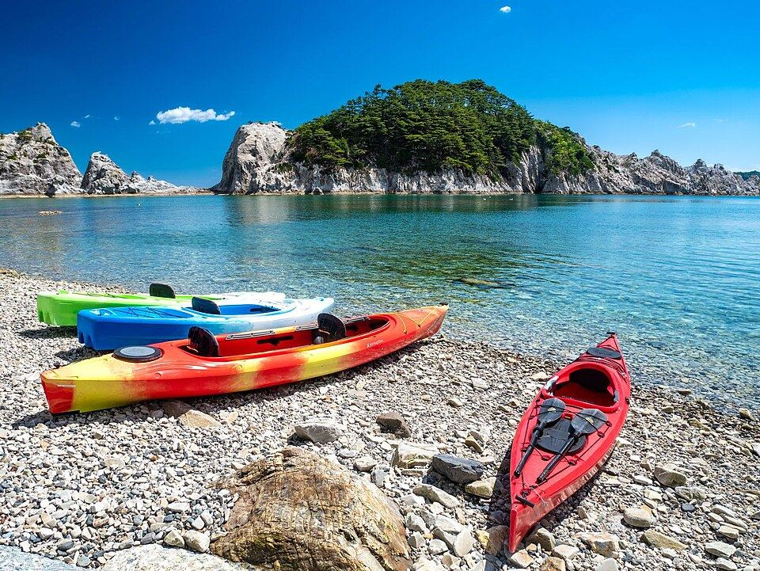
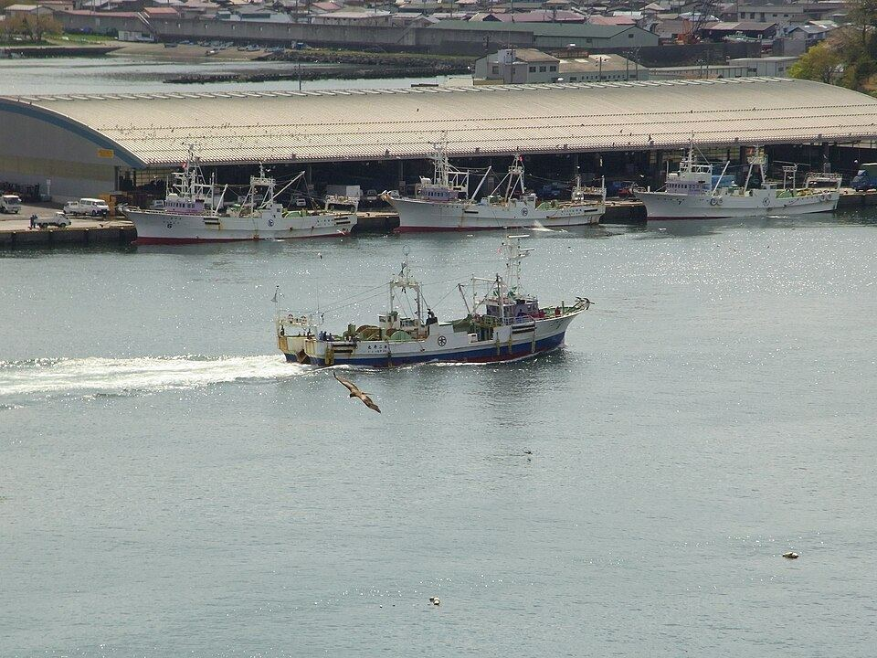
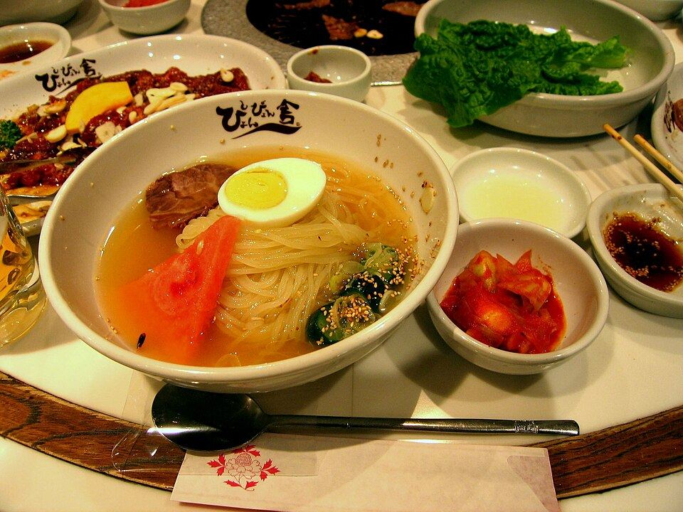

10/16 金 → 10/17 土母さんと 岩手の秋へ

北山崎第一展望台からの北山崎.jpg CC BY-SA 4.0母さんと佑樹と達也の3人旅。16日は盛岡駅で達也が迎えます。
- 日数
- 2日1泊2日
- 断崖
- 200m北山崎
- 洞内
- 10℃龍泉洞
下にスクロールで 16日 → 17日
新幹線
まず新幹線をおさえる

Series-E5-U44 Hayabusa-2.jpg CC BY-SA 4.0えきねっとの「トクだ値スペシャル28」は乗車日の1か月前10時に売り出して、28日前の23時50分で終わり。行きは9月16日(火)10時から18日(木)の夜まで、帰りは9月17日(水)10時から19日(金)の夜まで。席数が決まっているので、始まってすぐが確実です。
- 1買うところえきねっと。母さんのアカウントで往復ぶん2人分
- 2ねだん通常は片道15,450円。スペシャル28なら半額くらい
行き 10/16(金) 東京 → 盛岡
- はやぶさ3号7:32 → 9:44購入ずみ。盛岡駅で達也が待っています
帰り 10/17(土) 盛岡 → 東京
- はやぶさ42号19:50 → 22:04宮古を16:30に出て達也が駅まで送る。夕飯の時間もあります。おすすめ
- はやぶさ38号18:50 → 21:04宮古を15時に出れば乗れます
- はやぶさ44号20:50 → 23:04最終。盛岡でゆっくりできますが家に着くのが遅くなります
16日 朝
盛岡駅で達也が待っています
Series-E5-U44 Hayabusa-2.jpg CC BY-SA 4.0はやぶさ3号は盛岡に9時44分着。改札を出たところで達也の車に乗って、国道455号を東へ約2時間で龍泉洞です。運転は達也におまかせです。
- 19:44 盛岡着はやぶさ3号（東京7:32発）。出口は新幹線改札のあと、達也に場所を連絡
- 29:55 出発途中で道の駅や休憩を入れながら東へ。着いたら龍泉洞が11:50ごろ
- 3お願いするもの保冷バッグは車に積んでもらえる。上着だけは手元に
16日 午前
龍泉洞の青い地底湖

Ryusendo Cave Underground Lake Cap 20201115.jpg Public domain盛岡から国道455号を東へ約2時間、達也の運転で。日本三大鍾乳洞のひとつで、底まで見えるほど透明な地底湖が洞の奥に静かにあります。中は年じゅう10度くらいなので上着を持って入ります。
- 111:50 到着8:30〜17:00・大人1,100円、小中学生550円
- 2所要 1時間階段があるので手すりを持ってゆっくり
- 3お昼洞を出たら道の駅いわいずみで。岩泉のヨーグルトが名物。達也のおすすめがあれば乗る
16日 午前のおまけ
行く前に知っておくともっと面白い
岩泉町公式チャンネル「日本三大鍾乳洞、透明度を誇る地底湖 岩泉町ー龍泉洞」
1分ほどの動画で、中がどんな場所か先に見ておけます。この青は「ドラゴンブルー」と呼ばれていて、水がきれいすぎて青く見えるのだそうです。
- 総延長
- 4,088m公開は700m
- 地底湖
- 8つ公開は3つ
- 水深
- 98m第三地底湖
- 1国の天然記念物1938年に「岩泉湧窟及びコウモリ」の名前で指定されました。守られているのは洞だけでなく、中に棲むコウモリも
- 2日本三大鍾乳洞山口の秋芳洞、高知の龍河洞と並ぶ3つのうちのひとつ
- 3名水百選湧き出る水は1985年に名水百選。売店で飲めます
- 4まだ先がある確認されているのは4,088mですが、本当は5,000m以上あると言われていて、奥はまだ誰も見ていません
16日 午後
北山崎の断崖を上から
北山崎第一展望台からの北山崎.jpg CC BY-SA 4.0高さ200mの断崖が8kmつづく、三陸海岸の主役。岩泉から約50分。第一展望台までは駐車場から平らな道ですぐなので、母さんも楽に見られます。
- 114:10 到着第一展望台まで平ら。第二・第三は階段なので無理はしない
- 2風岬は風が強いので上着を1枚
- 3ビジターセンタートイレと休憩所があります
16日 夕方
北緯40度の黒崎に立つ

KurosakiToudai2010.jpg CC BY-SA 3.0普代村のシンボル。断崖の上に立つ白い灯台と、太陽の光でゆっくり回る地球儀の塔があります。ここから宿までは車で10分。
- 115:40 到着北山崎から約30分。日が落ちるのは17時前なので、押したら北山崎を短めに
- 2陸中黒埼灯台日本の灯台50選。高さ130mの崖の上
- 3アンモ浦展望台くろさき荘の裏から262段。海に落ちる滝が見えます（元気があれば）
16日 夜
普代B邸にチェックイン

普代B邸（ADDress公式ページ） ADDressの家。商店街の近くの一軒家で、部屋は201。16時半すぎに着けるので、夕飯の前にくろさき荘のお風呂へ行く時間もあります。車は達也が出してくれます。
- 116:30 チェックイン14:00〜21:00（チェックアウトは翌10:00）
- 2住所〒028-8331 岩手県下閉伊郡普代村宇留部6-8
- 3お風呂国民宿舎くろさき荘の日帰り入浴。達也の車で12分・タオルは持参
- 4夕飯お食事処いち龍（徒歩9分）。朝ごはんはマルコシ商店（徒歩10分）で
17日 朝
三陸鉄道で宮古へ

三陸鉄道 36-700形.jpg CC BY-SA 4.0ここだけは達也なしで、普代駅から三陸鉄道に乗って宮古まで。海沿いを走る1両のローカル線で、窓の外が三陸の景色です。宮古駅に着いたら達也が迎えに来てくれます。
- 17:00 朝ごはん前の日にマルコシ商店で買っておいたもので軽く
- 28:43 普代駅発宮古行き。乗車は約1時間15分、10時ごろ宮古着。逃すと次は11:04なので、8:20には宿を出る
- 310:00 宮古駅改札を出たところで達也と合流。着く前に連絡
17日 午前
宮古駅から浄土ヶ浜へ3人で

浄土ヶ浜の風景20220625-P1390448.jpg CC BY 4.0白い岩と緑の松と、透きとおった青。達也の地元なので、案内はまかせましょう。遊覧船に乗ると、陸からは見えない断崖と洞が海の側から見られます。
- 110:20 浄土ヶ浜宮古駅から達也の車で約10分。達也の地元なので、案内はまかせましょう
- 2遊覧船 宮古うみねこ丸9:00〜16:30。湾内周遊は大人1,800円、30分。10月の火曜は運休（17日は土曜なので運航）
- 3駐車場4〜10月は園地内が車両規制。第1駐車場に停めて歩くかシャトルバス（土日祝運行）
17日 昼
瓶ドンを3人で食べる

Japan,Iwate,Miyako city,Fishing harbor.jpg CC BY-SA 4.0牛乳瓶に生うにを詰めた宮古の名物。魚菜市場は朝6時半から開いていて、市場の中で海鮮丼も食べられます。達也のおすすめを聞くのがいちばん確実。
- 1宮古市魚菜市場6:30〜17:30・水曜休み。17日は土曜なので開いています
- 2瓶ドン牛乳瓶に入った生うに。ごはんに自分であける宮古だけの食べ方
- 3おみやげ市場で干物や海産物。保冷剤をもらっておく
17日 午後 選べる
ごはん・おふろ・観光、好きなものを選んで
Japan,Iwate,Miyako city,Fishing harbor.jpg CC BY-SA 4.0夕方まで時間はたっぷりあります。達也の車なので、寄る順番は当日の気分で決めて大丈夫。決めやすいように候補を並べておきます。
- 1ごはん宮古市魚菜市場の瓶ドン／盛岡に戻って冷麺（ぴょんぴょん舎）／道の駅いわいずみのヨーグルト
- 2観光浄土ヶ浜と遊覧船／宮古のまち歩きと市場／昨日見られなかった所があれば達也に頼んで戻る
- 3おふろくろさき荘は普代なので遠回り。盛岡駅の近くで入るなら達也に聞く
- 4決める目安16:30に宮古を出れば、盛岡で夕飯を食べて19:50の新幹線に乗れる
17日 夕方
達也が盛岡駅まで送ってくれる

Morioka Reimen.jpg CC BY-SA 3.0宮古から盛岡までは横断道路で約1時間半。信号がほとんど無い道です。時間は新幹線に合わせるだけで大丈夫。
- 116:30 宮古を出る盛岡着は18時ごろ。余裕を見て早めに
- 2夕飯ぴょんぴょん舎 盛岡駅前店は駅から徒歩3分。時間がなければ駅ビルで
- 319:50 はやぶさ42号盛岡→東京22:04。達也とは改札前で
準備
持ちもの
- 上着山も海も10月は冷える。1枚多めに
- 歩きやすい靴展望台と洞内の階段
- 日帰り入浴セットくろさき荘。タオルは持参
- 新幹線の切符母さん。行きは9/18の夜、帰りは9/19の夜が半額の締切
- 酔い止め山道のカーブと、遊覧船に乗るなら
- 保冷バッグ市場でおみやげを買うなら
- 三陸鉄道17日は普代駅8:43発。切符は駅で買う
分担
- 母さん新幹線の予約（購入ずみ）
- 佑樹宿の手配／しおり
- 達也16日 盛岡駅から送迎／17日は宮古駅から
おわり
それでは 10月16日に
予定が変わったら佑樹に言ってください。このページも直します。
写真: Wikimedia Commons（各撮影者・CC BY / CC BY-SA）とADDress公式ページより。料金・営業時間は2026年9月時点の各公式サイト。